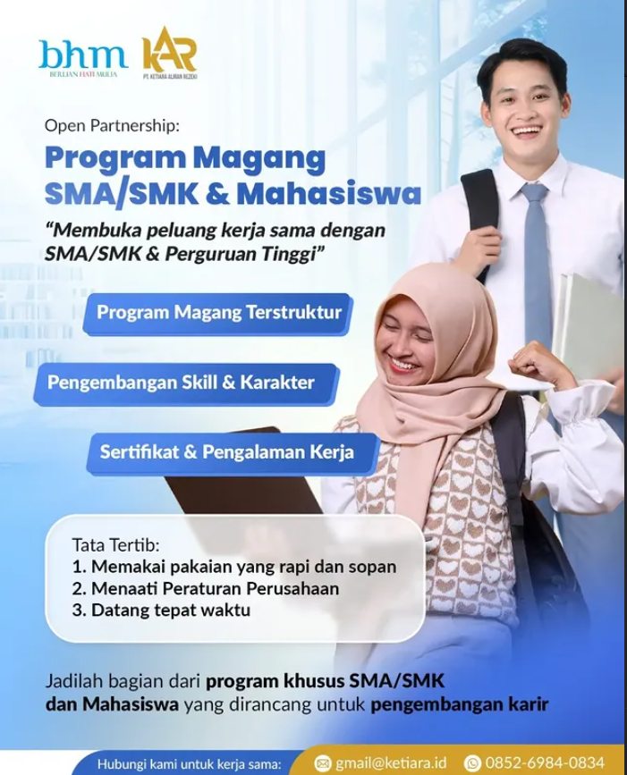

Kami membangun lingkungan kerja yang kolaboratif, terbuka terhadap ide baru, dan berorientasi pada dampak nyata bagi dunia pendidikan Indonesia. Nilai integritas, inovasi, dan keunggulan menjadi landasan setiap pekerjaan yang kami lakukan.
Lingkungan Kerja: Karyawan bekerja dalam tim yang saling mendukung dengan komunikasi terbuka antar divisi, didukung jam kerja yang jelas, ruang untuk berkembang, serta berbagai kegiatan kebersamaan seperti senam pagi, family gathering, dan pengajian rutin untuk menjaga keseimbangan kerja dan kehidupan pribadi.
Berikut posisi yang sedang kami buka. Lamaran dapat dikirimkan melalui saluran yang tertera pada masing-masing posisi.
Menyusun konten edukatif dan mengelola media sosial brand-brand di bawah PT KAR, termasuk PUSKANAS dan Gemanesia.
Lowongan dibuka untuk anda yang mahir dalam permarketing secara online.

Lamaran untuk anak SMK yang sedang mencari tempat PKL